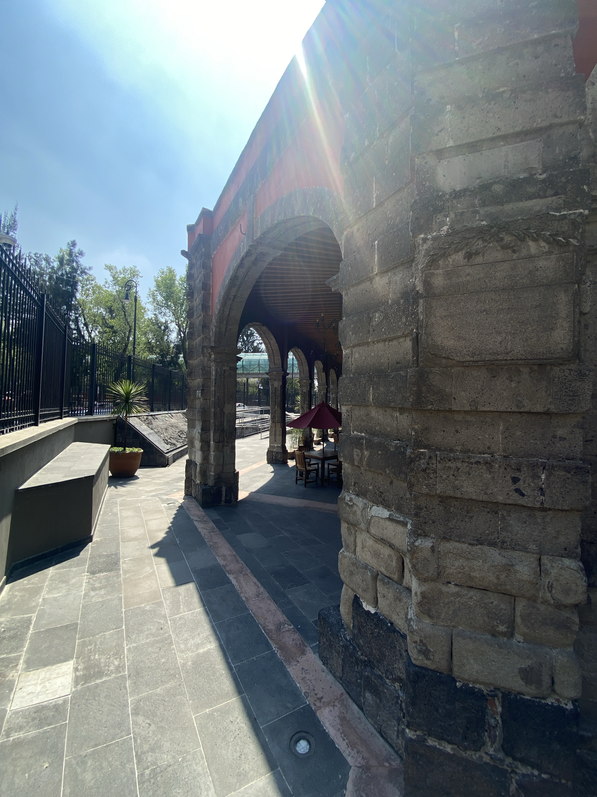
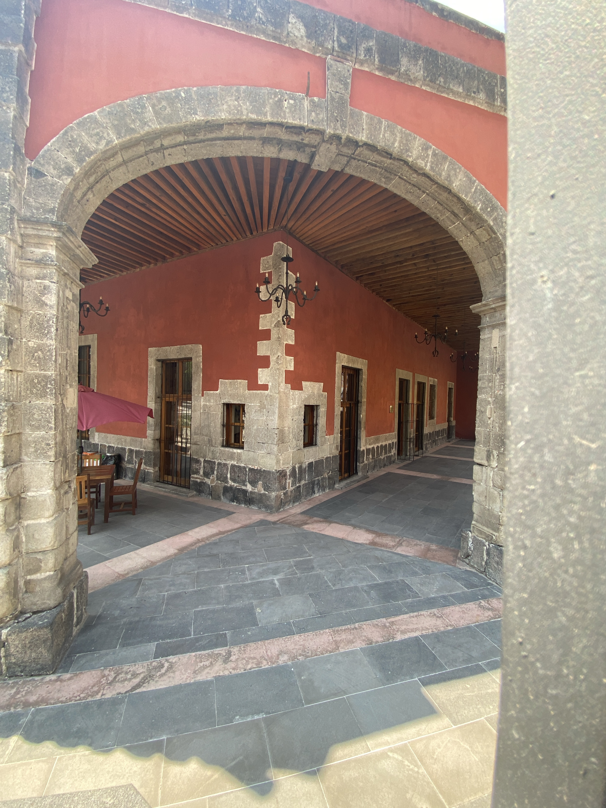
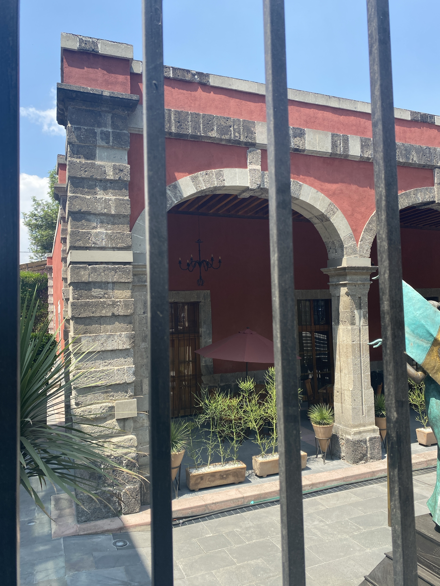
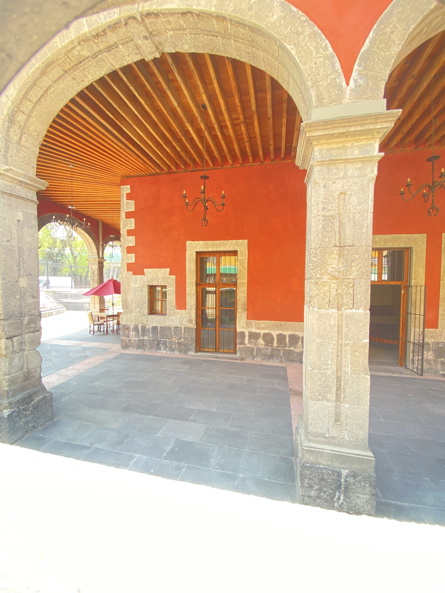
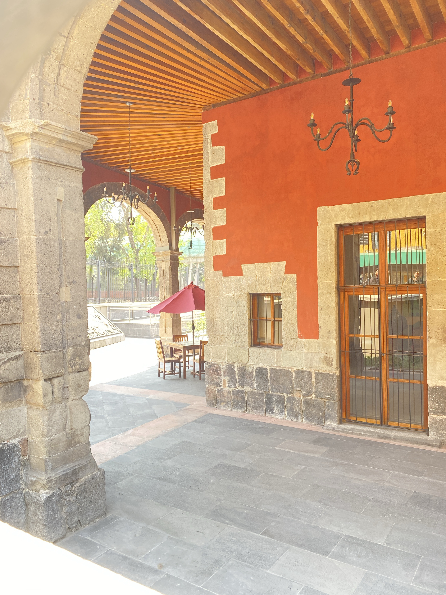

"Nadie protege lo que desconoce"
Ubicada en un punto estratégico de la Ciudad de México, la Ex Garita de San Lázaro ha sido testigo de siglos de transformación urbana. A través de un riguroso proceso de restauración, buscamos rescatar la memoria histórica y devolver la vida a este recinto patrimonial.
Una representación visual del proceso creativo detrás de la restauración.
Escucha las voces que reconstruyeron la historia.




